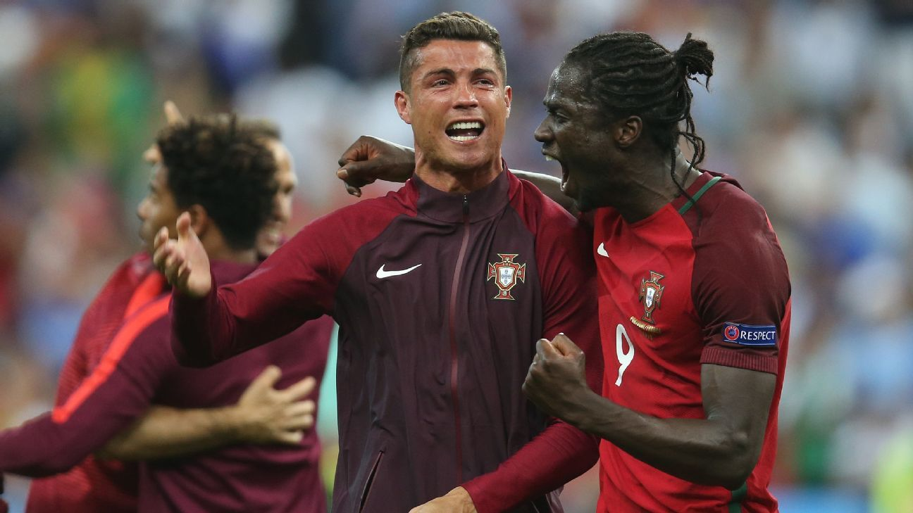

Euro 2016 Final — 'Carried' to the Title, Marketed as the Hero
Rushed injury exit: At the Euro 2016 final, Portugal against hosts France. As early as the 8th minute Ronaldo was brutally clattered by Payet, suffering left-knee ligament damage. He grimly tried to continue but in the 25th minute was stretchered off in tears, the stadium watching in dismay. The showpiece final saw its lead actor bow out after barely half an hour.
The moth steals the show: The most viral image of the match was thousands of moths swarming the Stade de France. One moth landed firmly on Ronaldo's face as he lay on the pitch, instantly blowing up social media worldwide and becoming the tournament's most ironic iconic shot. The lead actor barely played; the moth became the lead instead.
Éder's winner: The real hero was substitute Éder. In the 108th minute of extra time the unknown striker drove a 25-metre shot into the bottom corner, sealing Portugal's 1-0 victory. Éder admitted afterwards: 'Before that night, nobody knew me outside the team and my family.' This golden goal should have belonged to him alone.
Sideline scene-stealing: Yet the post-match celebrations and narrative were almost entirely focused on the injured Ronaldo. On the sideline he gesticulated, bellowed and acted like 'the second manager', hogging the spotlight. From motivating teammates to directing runs, Ronaldo's need to perform ran through the entire night, claiming the trophy his teammates had bled for as his own.
PR-driven coronation: After the final, the marketing machine ran at full tilt and Ronaldo was packaged as the 'chief architect' who 'led the team to glory', Portugal's national hero. Front pages were almost uniformly him kissing the trophy, while Éder, who actually scored, was reduced to a footnote. A 'carried' title was rewritten as a coronation, drawing scepticism from all sides.
The numbers tell the truth: Objectively Ronaldo contributed 3 goals at these Euros, but he played just 25 minutes of the final. Portugal drew all three group matches and squeaked through as one of the best third-placed sides, the path to the title not particularly glittering. To attribute all glory to a player who went off injured early is plainly unfair, yet the commercial narrative locked it in.
The 'carried' controversy: This final is therefore a recurring 'dark-history' entry for Ronaldo — when a player wins a title without really playing and still claims all the credit, that 'leadership aura' looks awfully cheap. The moth-on-face photo has become almost the most biting footnote to this 'carried-title marketing'.